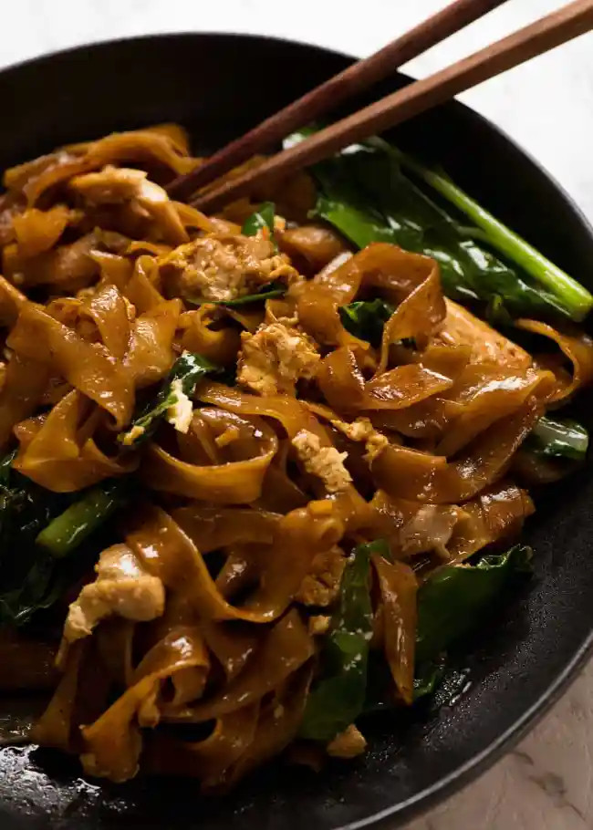

Pad See Ew

Description
Pad See Ew - the popular Thai stir fried noodles straight
from the streets of Thailand made at home! While Pad Thai
is sweeter and nuttier, Pad See Ew is salty, balanced with
a touch of sour and a wonderful chargrilled flavour which
you can create at home!
Ingredients
- Dark Soy Sauce
- Soy Sauce
- Oyster Sauce
- Vinegar
- Sugar
- Chinese Broccoli
- Garlic
- Egg
- Chicken
- Rice noodles
Directions
- Cook chicken and vegetables first then remove
- Add noodles and sauce, toss to caramelise (15 seconds)
then add chicken and vegetables back in
- serve with coleslaw as a side